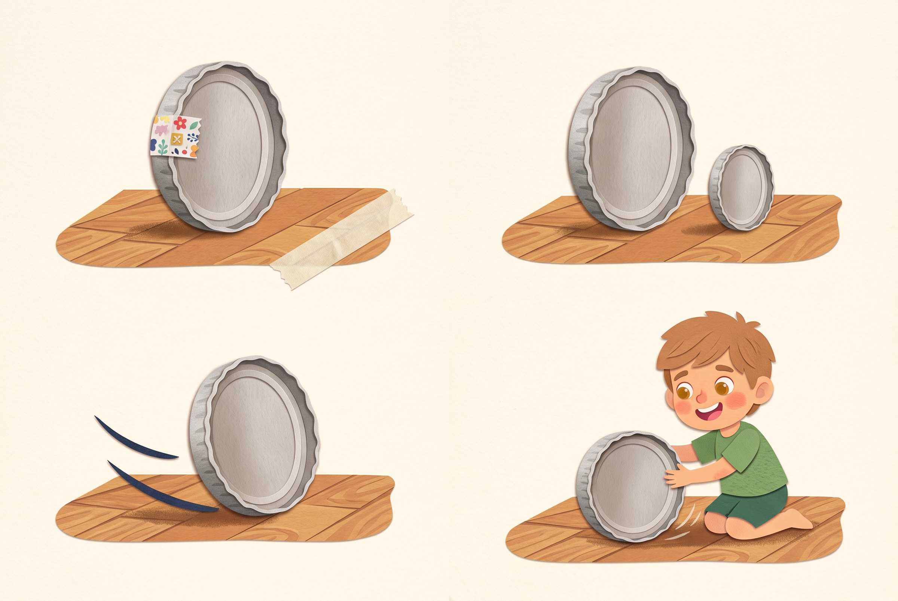
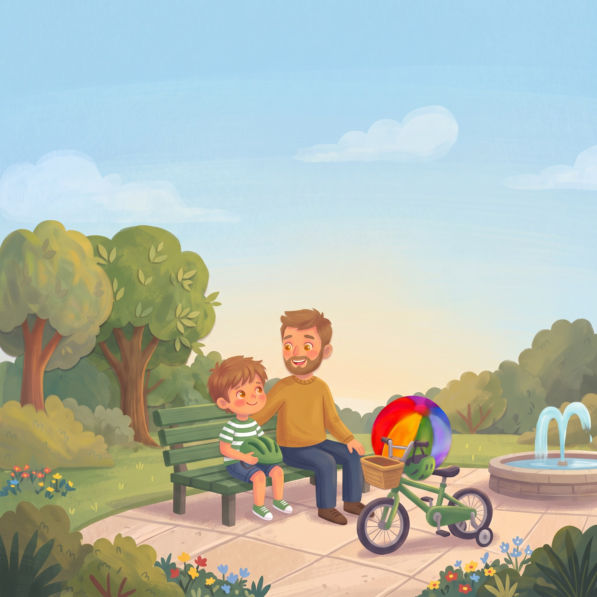

Soy Tomi. Ya sé girar, sentarme, gatear, pararme, caminar, correr, saltar, subir la escalera, tirar una pelota y nadar.
Papá me trajo una bici verde y un casco. Hoy voy a aprender a andar en bici.
2
3
En la plaza, pongo a Rula en el canasto. Me siento y apoyo los pies en los pedales.
Con las rueditas al costado, pedaleo despacito. ¡No me caigo!
4
5
Miro la rueda de adelante. Gira y gira, como Rula cuando rueda.
Una vuelta, dos vueltas, tres vueltas… Con cada vuelta, la bici avanza.
6
7
Mi pie va arriba, adelante, abajo, atrás… y otra vez arriba.
ARRIBA
ADELANTE
ABAJO
ATRÁS
CICLO
Los pedales hacen siempre el mismo camino, una y otra vez. Eso es un CICLO.
8
9
Papá saca las rueditas. Me subo y me quedo quieto… ¡uy, me caigo para un costado!
Papá me sostiene. Con la bici quieta, es muy difícil mantener el equilibrio.
10
11
Ahora papá me empuja del asiento y yo pedaleo. Avanzo, avanzo…
EQUILIBRIO
¡Cuando la bici avanza, es más fácil mantener el EQUILIBRIO! Si freno del todo, apoyo un pie en el piso.
12
13
Papá me suelta despacito. Yo no me doy cuenta y sigo pedaleando.
Miro para atrás… ¡papá está lejos! ¡Voy solo!
14
15
Doy una vuelta a la plaza: paso por el árbol, la fuente, el banco… ¡y otra vez el árbol!
Siempre vuelvo al principio: es otro ciclo. ¡Ya di tres vueltas!
16
17
¿Cuándo es más fácil no caerse: con la bici quieta o andando?
Si doy dos vueltas a la plaza, ¿cuántas veces paso por la fuente? ¿Vos qué decís?
18
19
Ando en bici por la plaza con mi casco y con Rula en el canasto. ¡Ya casi no me caigo!
Hoy aprendí a andar en bici. ¿Vos sabés cuándo anduviste en bici por primera vez? Aprendí un montón de cosas… ¿y vos, qué vas a aprender ahora?
20
21
Experimento · para hacer con un adulto
¿Cuánto avanza una vuelta?
Necesitás: dos tapas redondas de distinto tamaño (de un frasco grande y de uno chico), un sticker o cinta de colores, un lápiz y cinta de papel.
Pegá el sticker en el borde de la tapa grande. Apoyala de canto en el piso, con el sticker tocando el piso, y marcá ese lugar con cinta.
Hacé rodar la tapa despacito hasta que el sticker vuelva a tocar el piso: ¡dio una vuelta! Marcá ese lugar.
Antes de seguir, adiviná: con la tapa chica, ¿una vuelta avanza más o menos?
Probalo y medí las dos con tus manos: ¿cuántas manos avanzó cada una?
Desafío: hacé rodar la tapa grande de canto, con un empujoncito. ¿Se mantiene parada mientras rueda? ¿Y cuando frena?

Qué pruebo
Yo creo que…
Lo que pasó
Tapa grande: una vuelta, ¿cuántas manos?
Tapa chica: una vuelta, ¿cuántas manos?
La tapa rodando: ¿se cae?
La tapa quieta de canto: ¿se cae?
En el desafío, anotá qué pasa cuando la tapa frena.
Qué descubrimosEn cada vuelta, una rueda avanza lo que mide su borde: por eso la tapa grande avanza más en una vuelta que la chica. Y mientras rueda, la tapa se mantiene parada; cuando frena, se cae, igual que la bici.
22
23

Para los grandes
El concepto. En cada vuelta, una rueda avanza lo que mide su borde (su circunferencia): por eso una rueda grande llega más lejos por vuelta que una chica. Una bici quieta se cae porque sus dos ruedas apoyan en una línea finita; cuando avanza, el que maneja corrige el manubrio todo el tiempo, casi sin darse cuenta, y la bici "vuelve a ponerse debajo" del cuerpo. Por eso es más fácil mantener el equilibrio andando que quieto. No son las ruedas las que sostienen: es el movimiento y esas pequeñas correcciones.
Vueltas y ciclos. Un ciclo es algo que se repite y vuelve al principio: el pedal que va arriba, adelante, abajo y atrás; una vuelta a la plaza; los días de la semana. Contar vueltas es una de las primeras formas de medir.
El hito. Muchos chicos aprenden a andar en bici sin rueditas entre los 5 y los 6 años, más o menos; las bicis sin pedales (de equilibrio) ayudan a que llegue antes. Cada chico tiene su ritmo; ante cualquier duda, lo mejor es consultar al pediatra.
Seguridad. Siempre con casco bien ajustado, aunque sea un ratito. En plazas, parques o veredas sin autos, nunca en la calle, y con un adulto cerca. Zapatillas cerradas, y la bici del tamaño justo: con los pies apoyados en el piso estando sentados.
Para charlar después de leer: ¿Qué otras cosas tienen ruedas? ¿Cuántas ruedas tiene cada una? ¿Por qué es más fácil no caerse andando que con la bici quieta? ¿Qué cosas se repiten todos los días, como un ciclo?